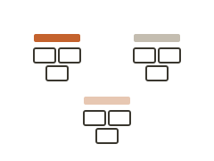
Affinity map

Empathy map
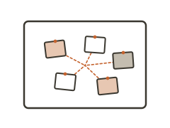
Evidence board
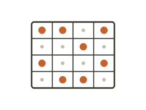
Coded quote matrix
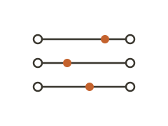
Polarity map
Persona card

Mental model diagram
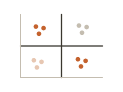
Behavioral archetype map
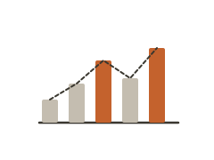
Cognitive load map
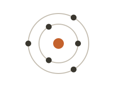
Stakeholder map

User journey map
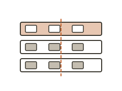
Service blueprint
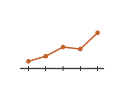
Longitudinal timeline
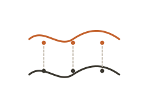
Multi-actor journey map
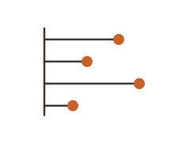
Bar / lollipop chart

Radar / spider chart
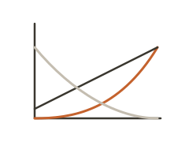
Kano model plot

Bubble / dot matrix
Rose / polar area chart
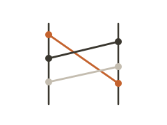
Slope / bump chart

Information architecture

Swimlane diagram
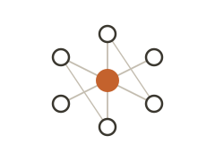
Ecosystem map
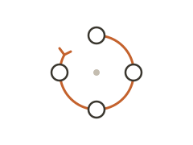
Causal loop map
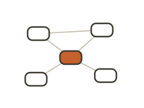
Concept / knowledge map
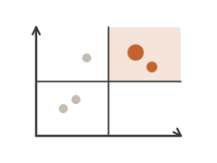
Prioritization matrix
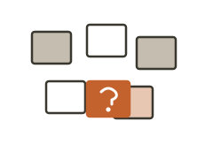
HMW insight board
Problem tree

Tension map